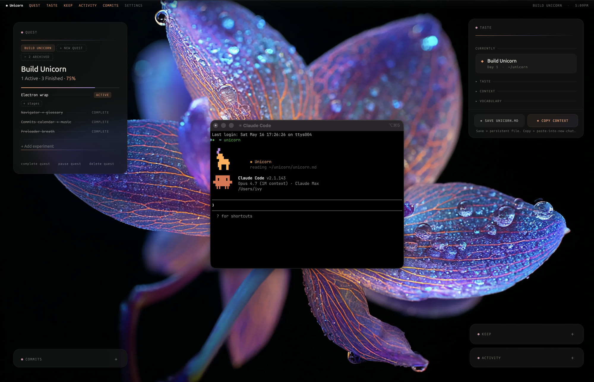

✺ a creative OS · sneak peek
Unicorn
A creative OS for designers experimenting with code. It runs beside Claude Code and holds the reasoning around your work, so it does not evaporate.
Ivy Grzybowski · Design Technologist · capstone
✷ the hook
type unicorn · the hook prints · the session is already listening
✦ the frame
Build for where the model is going, not where it is today.
Boris Cherny, creator of Claude Code.
A sneak peek is the method, not an apology.
❀ the exploration
Where is product design going?
I reached out on LinkedIn to design engineers who had been on the Dive Club, the best product design podcast out there. Four of them said yes.

✷ from the interviews · anonymized
- 01The work moves to directing agents.The edge is understanding what you steer, not the output.
- 02Taste and the last ten percent stay human.What a model mimics, and what it cannot yet decide.
- 03Context evaporates, so it has to live outside your head.Everyone keeps a fragile, scattered memory of their own.
a design engineer, anonymized
“I keep a vault. I treat it as my long term memory. If you have worked with AI at all, you know context is the huge thing.”
✤ the problem
The reasoning is the first thing lost.
A session throws off a dozen things worth keeping a day. They scroll out of the chat and disappear. Case studies used to take weeks to compile. Not anymore.
✺ the response
Unicorn. A mirror, not a dashboard.

◆ what it is


❋ product thinking
It got here by subtraction.
- startA dashboard with a game in it. Cute, not sticky.
- cutIf it only entertained, it failed the test.
- reframeA mirror of you accumulating, not a dashboard of today.
- nowWrapping into a desktop app. Real files on your machine.
❖ what is promised next
Automation is the missing piece.
The skill and the SessionStart hook are the bridge. It writes a casestory.md as you build. Built for the model six months out, working today.
◆ where it is
What is shipped. What is next.
Shipped
- The working app, live and usable
- The terminal hook + bridge
- Quest, Keep, Taste, Commits
- Matured by subtraction
Now
- Wrapping into a desktop app
- Keep writing real files to disk
- The case study, updated live
Next
- The skill filling Unicorn in
- Context that survives sessions
- Whatever the next model unlocks
Still building. Kept as it happens.
ivygrzy.com/work/unicorn · live preview · Ivy Grzybowski ✺ Design Technologist